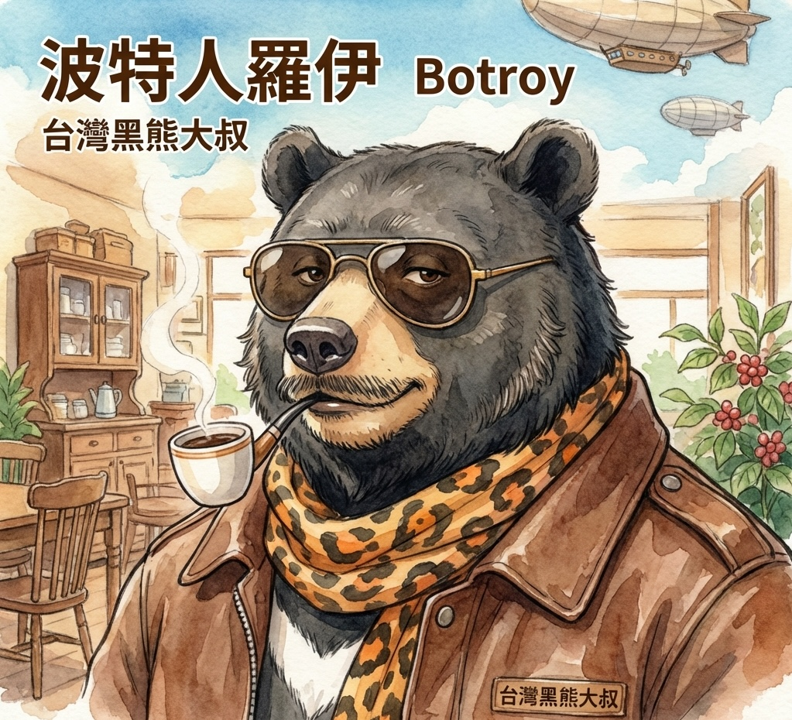

歡迎來到羅伊的實驗室！
這裡放著我用 AI 做的各種小工具和作品。
進來逛逛吧，讚啦！
用 AI 打造的實用小工具
五聲音階全指板視覺化顯示，幫助吉他手快速掌握 3-Notes-Per-String 指型。
七種調式音階與七和弦內音的互動式指板，支援任意調性切換。
特徵音標色、疊置三和弦、自動 TAB 句子練習，還能貼一段和弦進行問「這裡該彈什麼」。
藥師少女的獨語 — 生命的燈火。古典印刷風格鋼琴譜，支援 ABC 記譜法即時渲染。
支援 3/4、4/4 拍、8 分 16 分音符細分，6 種合成音色鼓機，Tap Tempo 即時抓拍。
16 種和弦 × 12 調，互動指板選音，和弦圖生成，和弦進行編排與試聽播放。
和弦大師加長版！22 格完整指板，電吉他高把位也涵蓋，滿版寬度鋪開爽快看。
8 種曲風 × 4/8 小節常見和弦進行，可改 voicing 即時辨識新和弦，BPM 與節奏密度可調，邊 loop 邊練即興 solo。
選調性 → 在第 3 或第 4 弦點根音，整片指板亮出該級順階和絃的內音。單弦順階爬梯上行／下行逐級跟練，七級固定配色，Arpeggio 一次記住。